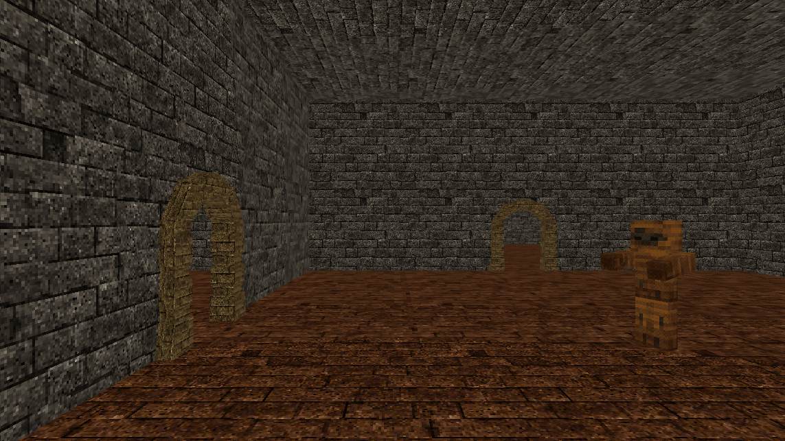

PSX Post Process Shader
Overview
A standalone post-process shader that replicates the look of PlayStation 1-era 3D graphics, built generally enough to drop into any Unity scene. It grew out of work originally done for Dungeons and Danger.
The Problem
Faking the PS1's limited color depth meant quantizing each color channel down to a small number of possible values, but doing that naively produced obvious banding: hard, visible steps between color levels that broke the illusion instead of selling it.
The Solution
I applied ordered dithering using a Bayer matrix, offsetting each pixel's quantization threshold by a value from the matrix before rounding to the nearest available color level. That breaks the flat bands up into a dithered pattern that reads as a smooth gradient at normal viewing distance, matching the dithered look real PS1 hardware produced under the same color constraints.
Distance fog needed a similar fix for a different constraint: raw depth buffer values don't map linearly to world-space distance, so the fog thresholds were responding to the wrong curve. Converting to linear eye depth first gave the fog effect a distance value that actually corresponds to how far something is from the camera.
Result
A standalone post-process shader with inspector-exposed controls for:
- Pixelation level
- Color channel quantization
- Fog depth thresholds
- Fog color
Shader Controls
Each inspector-exposed control, demonstrated live.